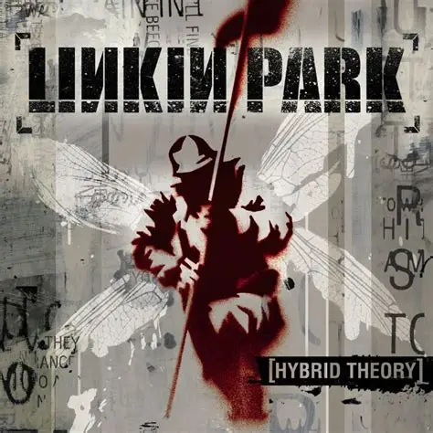
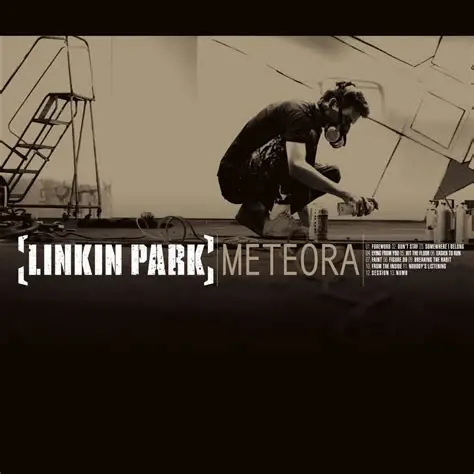
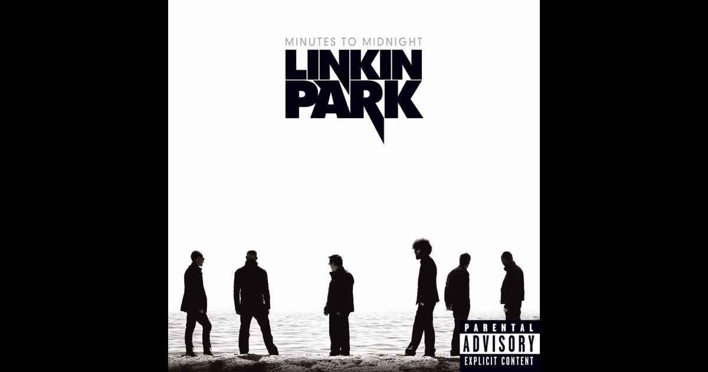
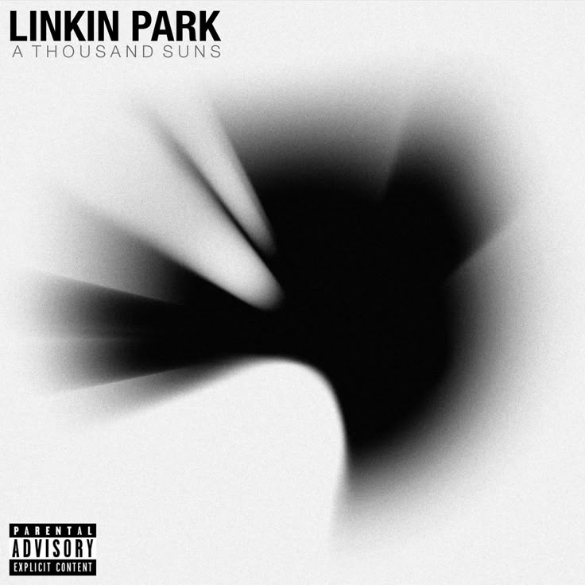
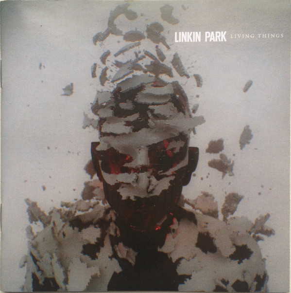
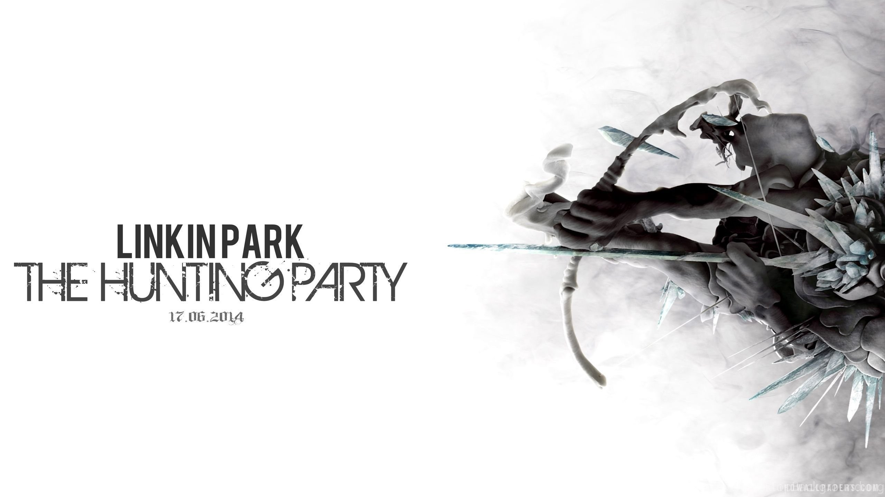
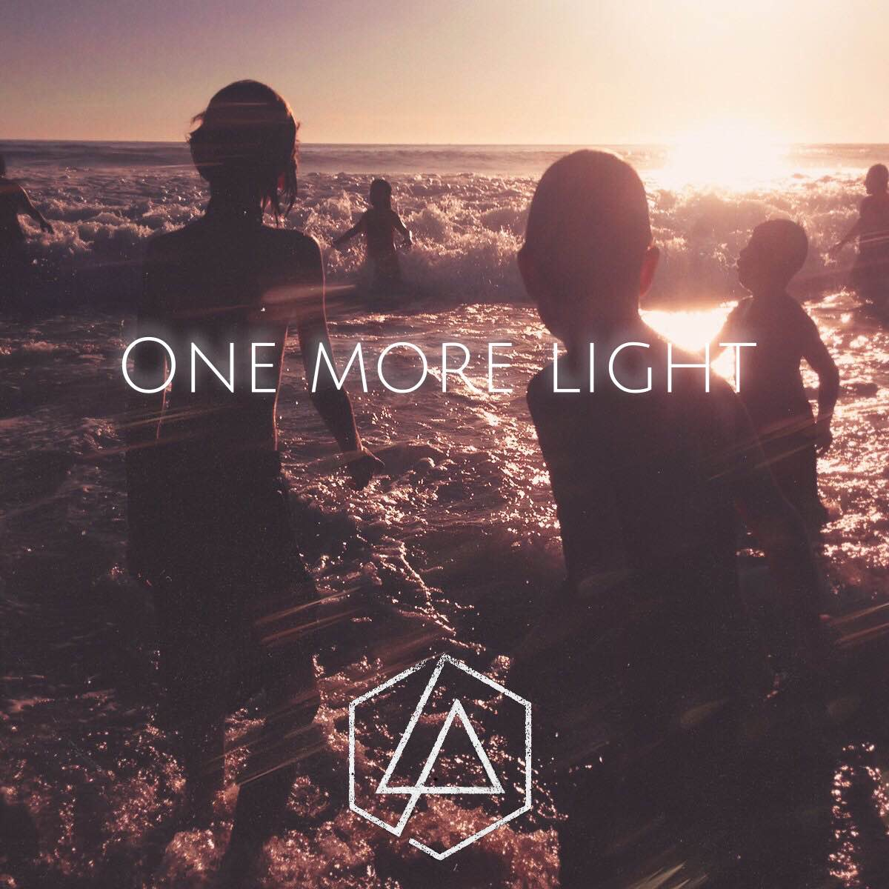
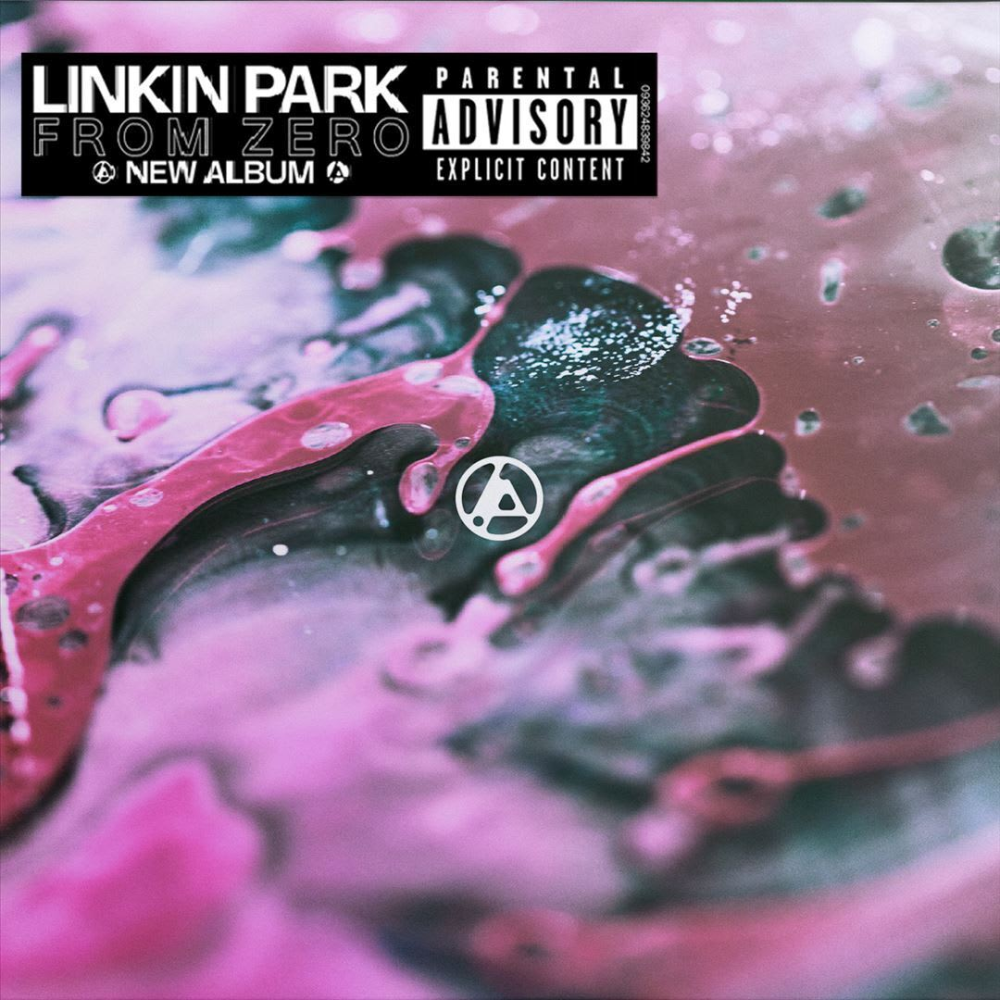

In the End
Linkin Park
Artista verificado
25.412.870 oyentes mensuales

Linkin Park

Linkin Park
Linkin Park
Linkin Park

Linkin Park
2000 • Álbum
2003 • Álbum
2007 • Álbum

2010 • Álbum

2012 • Álbum

2014 • Álbum

2017 • Álbum

2024 • Álbum